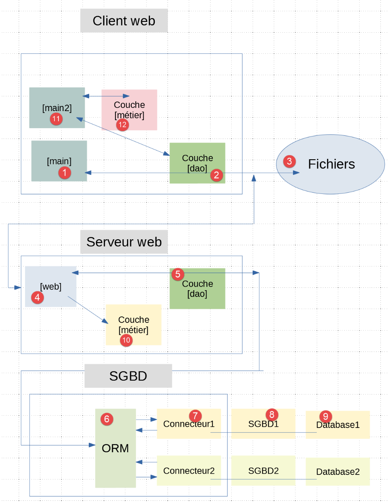
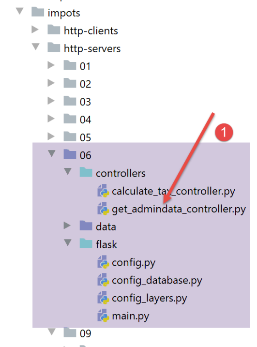
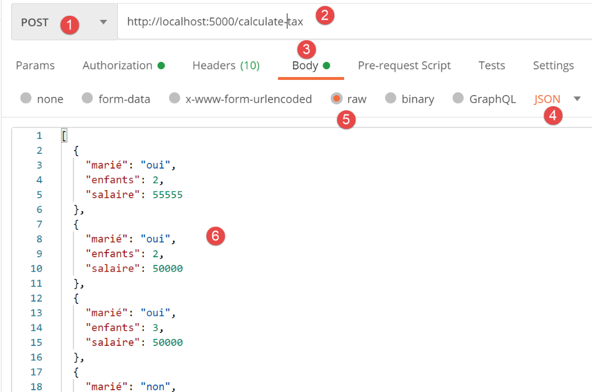
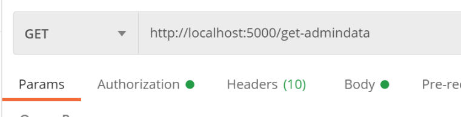
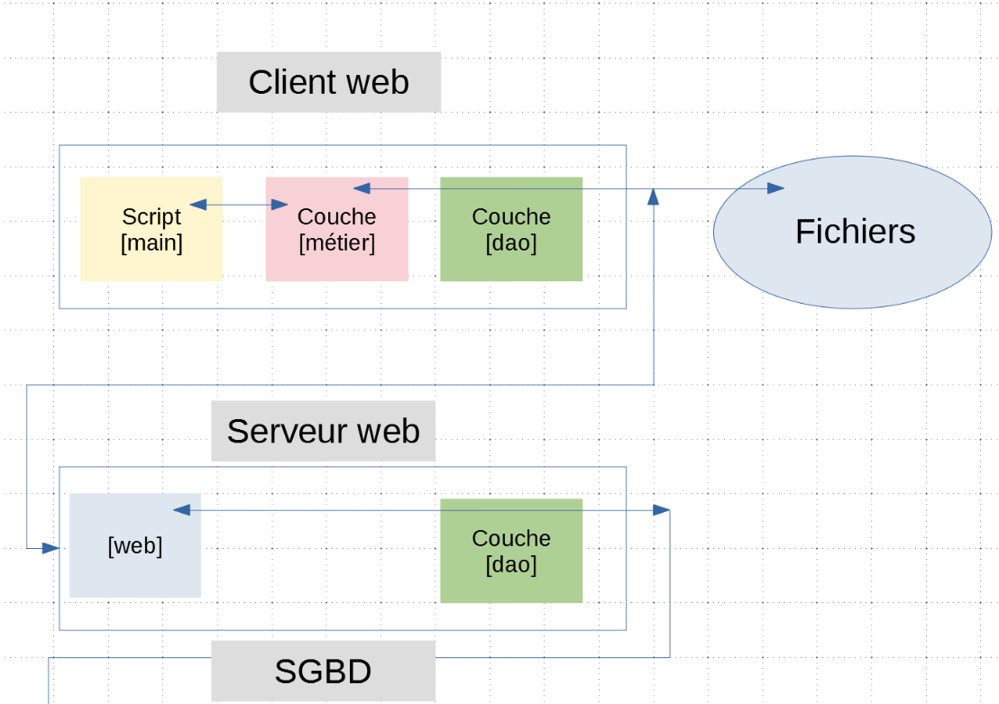
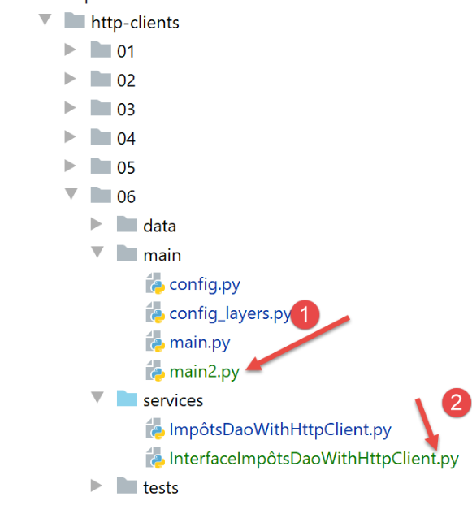
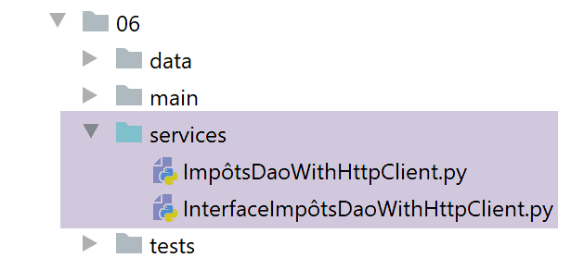

29. Exercice d’application : version 11
29.1. Introduction
Dans les versions précédentes de l’application client / serveur de calcul de l’impôt, la couche [métier] qui implémente les règles métier de ce calcul était côté serveur. On se propose maintenant de la déplacer côté client. Quel est l’intérêt ? Du travail que faisait le serveur va être déplacé côté client. Si on pense à la situation d’un serveur interrogé par N clients, N calculs métier de l’impôt seront faits par les clients. Dans les versions précédentes, le serveur faisait ces N calculs métier. Parce qu’il ne fait plus le calcul métier, le serveur va répondre plus rapidement à ses clients et va alors pouvoir en servir davantage simultanément.
L’architecture client / serveur devient la suivante :

- la couche [métier] [10] a été dupliquée [12] sur le client ;
-
un nouveau script [main2] [11] a été ajouté au client ; Le client web aura deux façon de calculer l’imppôt de la liste de contribuables trouvée en [3] :
-
utiliser la méthode de la version précédente. Il utilise la couche [métier] [10] du serveur. Le script [main] utilisera cette méthode ;
- se contenter de demander au serveur les données de l’administration fiscale [2-4] puis utiliser la couche [métier] [12] locale au client ; Nous comparerons les performances des deux méthodes.
29.2. Le serveur web
L’arborescence du serveur web sera la suivante :

- le dossier [http-servers/06] est initialement obtenu par recopie du dossier [http-servers/05]. On va en effet conserver l’acquis de la version 10 précédente. On va simplement lui ajouter une nouvelle fonctionnalité. Celle-ci est matérialisée par la présence d’un nouveau contrôleur [get_admindata_controller] [1]. L’autre contrôleur [calculate_tax_controller] n’est autre que l’ancien contrôleur [index_controller] qui a été renommé ;
29.3. Configuration
Le serveur offrira deux URL de service :
- [/calculate-tax] pour calculer l’impôt d’une liste de contribuables passée dans le corps d’un POST. Elle correspond donc à l’URL [/] de la version 10 précédente ;
- [/get-admindata] délivre la chaîne jSON des données de l’administration fiscale ; La configuration [config] associe chacune de ces URL au contrôleur qui la traite :
29.4. Le script principal [main]
Le script principal [main] restructure le script [main] de la version précédente :
1 2 3 4 5 6 7 8 9 10 11 12 13 14 15 16 17 18 19 20 21 22 23 24 25 26 27 28 29 30 31 32 33 34 35 36 37 38 39 40 41 42 43 44 45 46 47 48 49 50 51 52 53 54 55 56 57 58 59 60 61 62 63 64 65 66 67 68 69 70 71 72 73 74 75 76 77 78 79 80 81 82 83 84 85 86 87 88 89 90 91 92 93 94 95 96 97 98 99 100 101 102 103 104 105 106 | |
- lignes 88-93 : la fonction [calculate_tax] traite l’URL [/calculate-tax] ;
- lignes 95-100 : la fonction [get_admindata] traite l’URL [/get-admindata] ;
- ces deux fonctions ne font rien par elles-mêmes. Elles passent immédiatement la main au contrôleur principal [main_controller] des lignes 37-86 ;
- lignes 37-86 : le contrôleur principal [main_controller] n’est rien d’autre que la fonction [index] de la version précédente à un détail près : là où la fonction [index] ne traitait qu’une unique URL, ici [main_controller] traite deux URL. Il lui faut donc faire traiter celles-ci par l’un des deux contrôleurs [calculate_tax_controller, get_admin,data_controller] ;
- lignes 39-40 : on récupère l’action demandée [calculate_tax] ou [get_admindata]. Cette information est dans le chemin de l’URL [request.path]. Selon les cas, [request.path] vaut [/get-admindata] ou [/calculate_tax]. Le split de la ligne 40 va donner deux éléments :
- la chaîne vide pour la partie qui précède le / ;
- le nom de l’action demandée pour la partie qui suit le / ;
- lignes 62-63 : une fois l’action de l’URL récupérée, on sait quel contrôleur utiliser pour traiter l’URL. Cette informations sont dans la configuration [config] ;
29.5. Les contrôleurs
Le contrôleur [calculate_tax_controller] n’est autre que le contrôleur [index_controller] de la version précédente.
Le contrôleur [get_admindata_controller] est lui le suivant :
- l’URL [/get-admindata] doit rendre la chaîne jSON des données de l’administration fiscale ;
- ligne 6 : celles-ci ont été récupérées par le script principal [main] et mises dans le dictionnaire [config] sous la forme d’un objet [AdminData]. On rend le dictionnaire de cet objet ;
29.6. Tests Postman
On lance le serveur web, le SGBD et le serveur de mails [hMailServer]. Puis avec un client Postman, on fait le calcul de l’impôt de plusieurs contribuables :

Dans la console Postman, le dialogue client / serveur est le suivant :
Maintenant demandons l’URL [/get-admindata] avec un GET :

Le dialogue client / serveur dans la console Postman est le suivant :
29.7. Le client web


Le dossier [http-clients/06] est initialement obtenu par recopie du dossier [http-clients/05]. Le travail de modification consiste essentiellement à :
- modifier la configuration [config_layers] pour qu’elle intégre désormais une couche [métier]. Auparavant elle n’avait qu’une couche [dao] ;
- ajouter une nouvelle méthode à la couche [dao] ;
- écrire un script [main2] qui s’appuiera sur la couche [métier] du client pour calculer l’impôt des contribuables ;
29.7.1. Configuration des couches du client
La configuration des couches intervient en deux points :
- dans la configuration [config] qui doit inclure dans les dépendances du client le dossier contenant l’implémentation de la couche [métier]. Ce dossier était déjà inclus dans les dépendances :
Puis le fichier [config_layers] doit être modifié :
- lignes 4-6 : instanciation de la couche [métier] ;
- lignes 13-16 : la couche [métier] est rendue dans le dictionnaire des couches ;
29.7.2. Implémentation de la couche [dao]

La couche [dao] présentera l’interface [InterfaceImpôtsDaoWithHttpClient] suivante :
- ligne 5 : l’interface [InterfaceImpôtsDaoWithHttpClient] hérite de la classe abstraite [AbstractImpôtsDao] qui gère l’accès au système de fichiers du client. On rappelle qu’elle a une méthode abstraite [get_admindata] ;
- lignes 7-10 : la méthode [calculate_tax_in_bulk_mode] que nous avons définie dans la version précédente permet le calcul de l’impôt d’une liste de contribuables ; Cette interface est implémentée par la classe [ImpôtsDaoWithHttpClient] suivante :
- ligne 13 : la classe [ImpôtsDaoWithHttpClient] implémente l’interface [InterfaceImpôtsDaoWithHttpClient]. Elle dérive donc de la classe [AbstractImpôtsDao] ;
- lignes 65-66 : la méthode [calculate_tax_in_bulk_mode] étudiée dans la version précédente ;
- lignes 29-62 : la méthode [get_admindata] que la classe parent [AbstractImpôtsDao] a déclarée abstraite. Elle est donc implémentée dans la classe fille ;
-
lignes 33-35 : on détermine l’URL du service web que la méthode [get-admindata] doit interroger. Ces URL de service sont définies dans la configuration [config] du client :
-
lignes 9-12 : les deux URL du serveur web ;
- lignes 37-44 : l’URL de service est interrogée de façon synchrone ;
- lignes 46-42 : si la configuration le demande, la réponse du serevur est loguée ;
- ligne 57 : on sait que le serveur a envoyé une chaîne jSON d’un dictionnaire ;
- lignes 58-60 : si le statut HTTP de la réponse n’est pas 200, alors on lance une exception ;
- lignes 61-62 : on rend l’objet [AdminData] encapsulant les données de l’administration fiscale envoyées par le serveur ;
29.8. Les scripts [main, main2]
Le script [main] est celui de la version précédente. Il utilise la méthode [calculate_tax_in_bulk_mode] de la couche [dao] et utilise donc la couche [métier] du serveur ;
Le script [main2] fait la même chose que le script [main] mais en utilisant la couche [métier] du client :
- lignes 26-27 : on récupère les données de l’administration fiscale auprès du serveur ;
- lignes 28-31 : ensuite le calcul de l’impôt des contribuables est fait localement ;
29.9. Tests du client
Dans chacun des scripts [main, main2] on logue le début et la fin du script. On pourra ainsi calculer la durée d’exécution du script. Faisons quelques pronostics :
- le script [main] de la version précédente :
- crée N threads qui s’exécutent simultanément ;
- chaque thread traite un lot de contribuables dont il fait calculer l’impôt via une unique requête au serveur ;
- parce que les N threads s’exécutent simultanément, la requête N+1 est lancée avant que la requête N ait reçu sa réponse. Ainsi les N requêtes coûtent plus cher qu’une unique requête mais probablement pas beaucoup plus. Il y a par ailleurs 11 (le nombre de contribuables) calculs métier sur le serveur ;
- le script [main2] de cette version :
- fait une unique requête au serveur ;
- fait 11 calculs métier localement sur le client ; Les calculs métier auront la même durée que ce soit sur le serveur ou le client. La différence va alors se faire sur les requêtes. On peut s’attendre alors que la durée d’exécution de [main] soit légèrement supérieure à celle de [main2].
On lance le serveur de la version 11, le SGBD et le serveur de mails [hMailServer]. Côté serveur, on met le paramètre [sleep_time] à zéro pour que les deux tests soient exécutés dans les mêmes conditions.
Exécution 1 [main]
L’exécution de [main] donne les logs suivants :
La durée de l’exécution a été de [051214-016079] nanosecondes (ligne 17 – ligne 1), ç-à-d 35 millisecondes et 135 nanosecondes.
On voit qu’entre la 1ère demande faite au serveur et la dernière réponse reçue par le client, il y a la même durée [051214-016079] (ligne 15 – ligne 1), 35 millisecondes et 135 nanosecondes.
Exécution 2 [main2]
L’exécution de [main2] donne les logs suivants :
La durée de l’exécution a été de [349975-303520] nanosecondes (ligne 3 - ligne 1), ç-à-d 46 millisecondes et 455 nanosecondes. De façon tout à fait inattendue [main] est plus rapide que [main2].
On voit que l’unique requête de [main2] a duré [345084-303520] (ligne 2 – ligne 1), ç-à-d 41 millisecondes et 564 nanosecondes. Le calcul de l’impôt a ensuite duré [349975-345084] (ligne 3 – ligne 2) ç-à-d 4 millisecondes et 91 nanosecondes. C’est la requête HTTP qui fait la durée d’exécution. De façon surprenante, on voit ici que l’unique requête de [main2] a duré plus longtemps [41 millisecondes] que les quatre requêtes simultanées de [main] [35 millisecondes].
Côté serveur, les logs sont les suivants :
- ligne 5 : la 1ère requête du client [main] ;
- ligne 14 : la dernière réponse au client [main]. Il y a 6 millisecondes et 647 nanosecondes entre les deux ;
- lignes 15-16 : l’unique requête du client [main2]. La réponse est instantanée ;